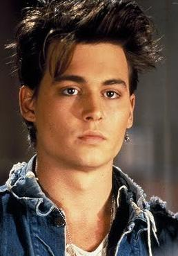

Ранні роки
Перші ролі
Особисте життя
Розвиток кар'єри
10 найкращих ролей
Джон Крістофер Депп народився в американському місті Оуенсборо, штат Кентуккі. Має індіанські корені. Його батько працював інженером в будівельній сфері, мати - офіціанткою. У сім'ї було четверо дітей: Джон, дві його сестри і брат. Дитинство проходило неспокійно, між батьками часто спалахували сварки, батько зганяв свою злість на дружині і дітях.
Джонні був дуже прив'язаний до діда, який багато часу проводив з ним в дитинстві. Після його смерті і переїзду до Флориди юнак важко переживав, рано почав курити і зустрічатися з жінками. Мати і батько розлучилися, коли Джону було п'ятнадцять. Після цього він став захоплюватися наркотиками і кинув школу.
Незабаром мати знову вийшла заміж за письменника Р. Палмера, з яким у Джоні склалися непогані відносини. Отримавши в подарунок гітару, він швидко освоїв інструмент і серйозно захопився музикою. Став грати в групі «Дітки», яка виступала на дискотеках. Потім змінив більше десяти музичних колективів. У той час йому здавалося, що він знайшов своє покликання. Крім того, мав здібності до образотворчого мистецтва, створив дизайн обкладинки для своєї групи. Ще одне захоплення юності - читання, улюбленим автором був Д. Керуак. Грав також у рок-групі «Р».
Перша дружина Деппа познайомила його з Н. Кейджем. Агент актора влаштував для Джонні проби, після чого і відбувся його дебют в картині «Кошмар на вулиці В'язів». Тоді він ще сподівався зробити музичну кар'єру, але вона не складалася. А перший акторський досвід, навпаки, став проривом.
Успіх прийшов до актора після його появи в багатосерійної детективної драми «Джамп Стріт, 21». Хоча самому Деппу було не до вподоби обожнювання і переслідування дівчаток-підлітків. Після головної ролі в картині 1990 року «Едвард руки-ножиці» він почав працювати з режисером Т. Бертоном на регулярній основі. Вважається, що саме ця співпраця і стало відправною точкою популярності актора.
Актор був завжди багатий на прихильниць. З 1983 по 1985 роки був одружений з художницею Л. Еллісон. Через кілька років пішли нетривалі романи з актрисами Д. Грей і Ш. Фенн. З 1989 року став зустрічатися з актрисою Вайноною Райдер. Пара проіснувала до 1993 року, шлюб планувався, але не відбувся. У Деппа після цього роману залишилася тату «Вайнона назавжди», після розриву змінилося на «Вино назавжди». Далі були відносини з британською фотомоделлю Кейт Мосс, тривали чотири роки і регулярно радували папараці своїми скандальними витівками.
Найбільш тривалими стали відносини з француженкою, актрисою і співачкою Ванессою Параді, з якою він зустрівся на зйомках фільму «Дев'яті врата». У них народилися дочка Лілі-Роуз (1999) син Джон (2002). Після 2010 року зоряна пара перестала з'являтися в суспільстві разом, у 2012 році заявила про розрив. Джонні і Ванесса залишилися в дружніх відносинах. Причиною розлучення стало захоплення Джонні актрисою Ембер Херд. Після трирічного роману в 2015 році вони одружилися, але вже через рік дружина подала на розлучення.
Депп володіє віллою у Франції, особняком в Лос-Анджелесі, островом на Багамах. У 90-х роках двічі був заарештований: перший раз у зв'язку з конфліктом з працівниками одного з нью-йоркських готелів, другий - за бійку з настирливим фоторепортером в лондонському ресторані. Депп змушений носити окуляри через короткозорість, його ліве око не бачить з дитинства.
З початку 1990-х років Депп став активно просуватися в світі кіно, звернувши на себе увагу прославлених режисерів. Крім Бертона, Депп брав участь у фільмах таких режисерів, як Кустуріца, Поланскі, Джармуш, Гілліам і ін. Його першим блокбастером стала містична картина «Сонна лощина» (1999). Початок нового століття позначилося участю у фільмах «Шоколад», «Кокаїн», «Одного разу в Мексиці» та ін.
Величезний успіх мали «Пірати Карибського моря», в яких спершу Джонні затвердили на другорядну роль. Також популярністю користувалася казкова картина «Чарлі і шоколадна фабрика», за участь в якій Депп був претендентом на «Золотий глобус». Всього номінантом на цю премію він був вісім разів, перемогу в 2008 році приніс образ демона-перукаря Суїні Тодда.
У фантастичній картині 2009 року «Воображаріум доктора Парнаса» Джонні догравав роль раптово померлого під час зйомок Х. Леджера і віддав зароблені гроші малолітньої дочки покійного Матильди. Великими і успішними фільмами 2010 року стали «Турист», «Аліса в країні чудес». У новому цікавому образі, що не вислизнуло від уваги критиків, Депп постав в «Чорній месі» 2015 року. Актор є одним з найбільш високооплачуваних у світі, три картини з його участю зібрали понад мільярд доларів кожна: «Аліса в країні чудес» і два фільми з циклу Пірати Карибського моря ».
| Рік | Назва |
|---|---|
| 1990 | Едвард Руки-ножиці |
| 1992 | Аризонська мрія |
| 1999 | Сонна лощина |
| 2000 | Шоколад |
| 2001 | Кокаїн |
| 2004 | Чарівна країна |
| 2005 | Чарлі і шоколадна фабрика |
| 2007 | Свіні Тодд |
| 2010 | Аліса в Країні Чудес |
| 2012 | Похмурі тіні |